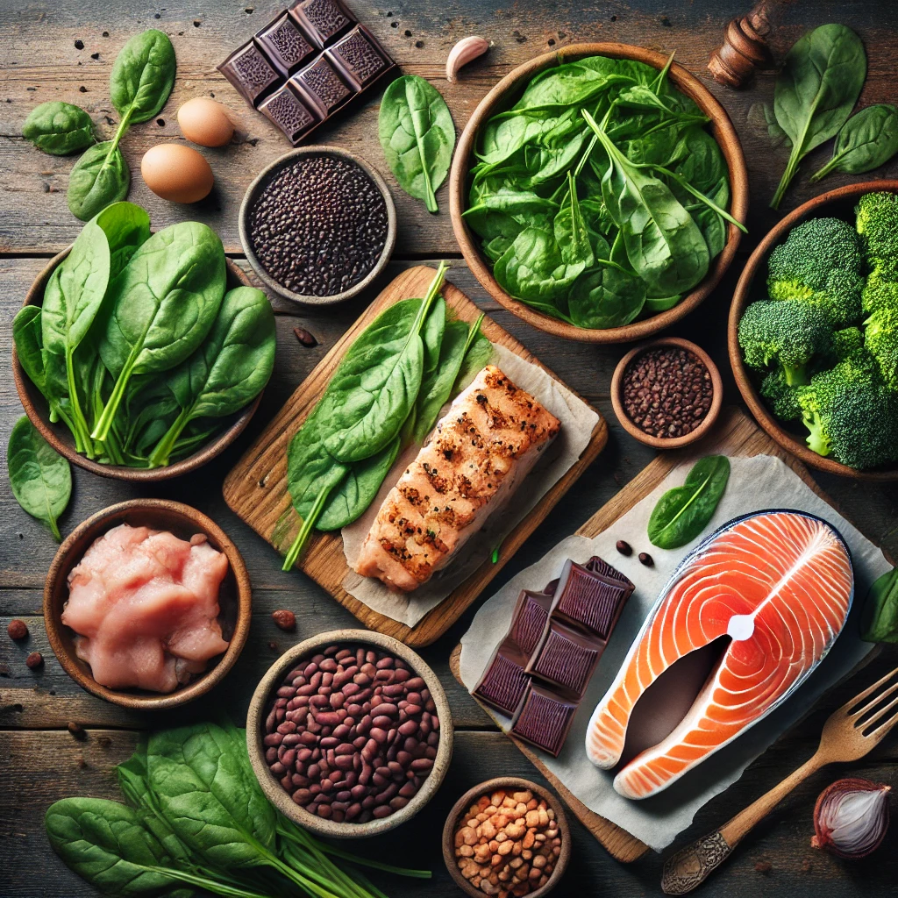
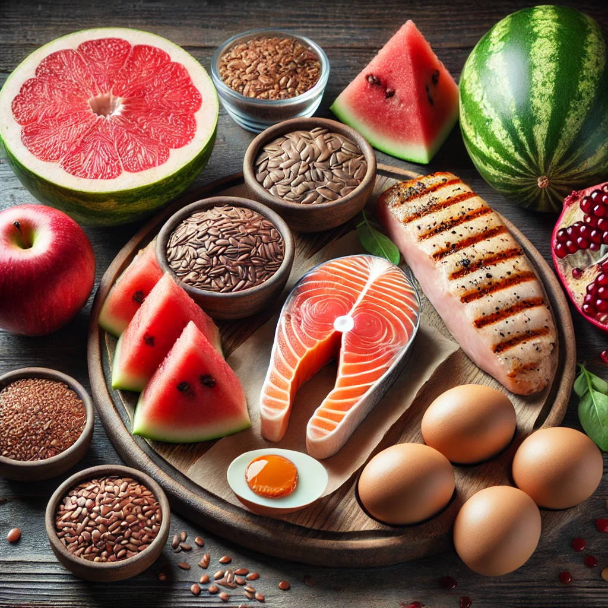
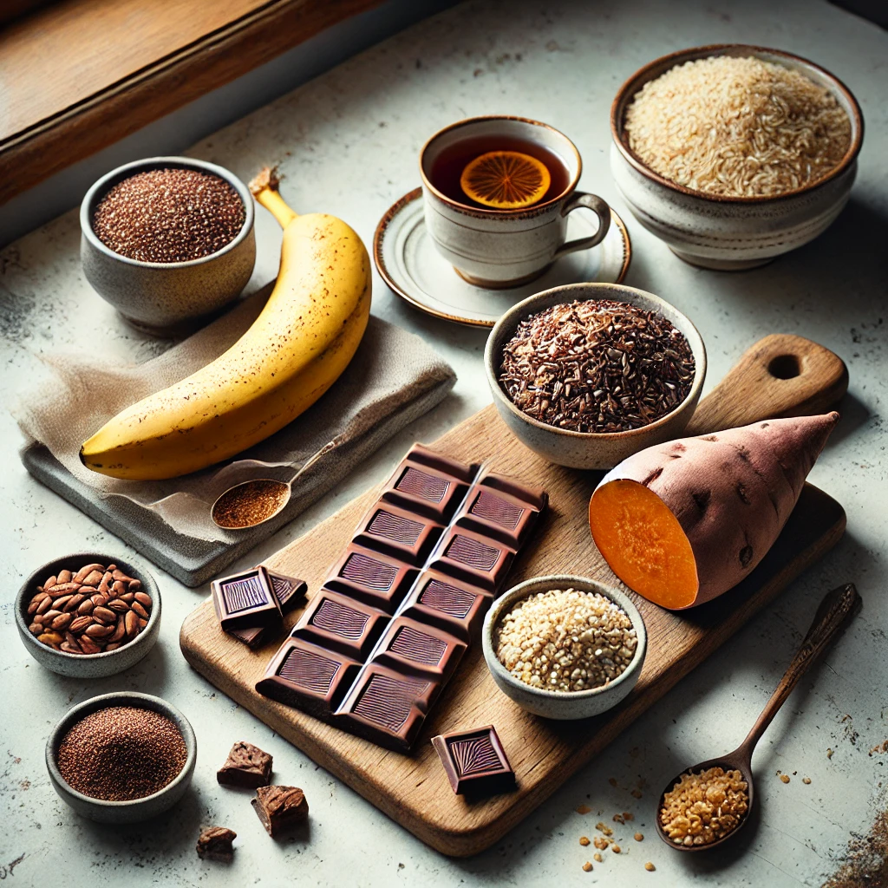

Food to Support Your Cycle
Support your body with the right food for every phase of your cycle.

Menstrual Phase (Days 1-5)
Best Foods: Iron-rich foods to replenish lost nutrients.
- 🥬 Spinach, kale, and other leafy greens
- 🐟 Lean meats and fish
- 🍛 Lentils and beans
- 🍫 Dark chocolate (for magnesium & iron)

Follicular Phase (Days 6-14)
Best Foods: Energy-boosting and nutrient-dense foods.
- 🥚 Eggs and avocados
- 🍊 Fresh fruits like oranges and berries
- 🥒 Fermented foods (yogurt, kimchi) for gut health
- 🌰 Nuts and seeds (omega-3s for hormone balance)

Ovulation Phase (Days 14-17)
Best Foods: Support fertility with healthy fats and antioxidants.
- 🐟 Salmon and flaxseeds (rich in omega-3s)
- 🥚 Eggs and lean protein
- 🥕 Colorful vegetables (bell peppers, carrots)
- 🍉 Watermelon and pomegranate (boost circulation)

Luteal Phase (Days 18-28)
Best Foods: Reduce PMS symptoms with calming and magnesium-rich foods.
- 🍌 Bananas and dark chocolate (magnesium for mood)
- 🌾 Whole grains (quinoa, brown rice)
- 🍵 Chamomile tea and herbal infusions
- 🍠 Sweet potatoes (help balance blood sugar)